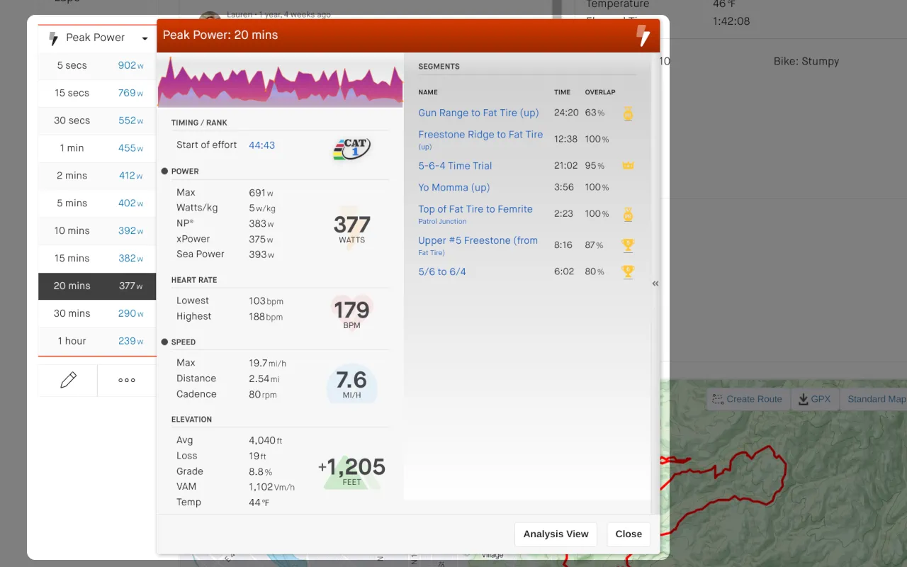
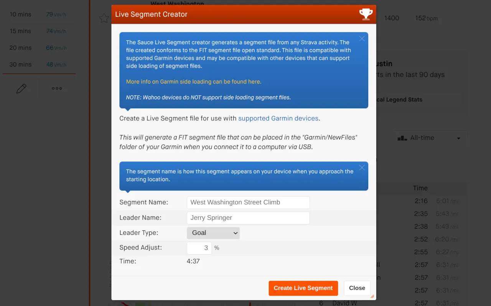
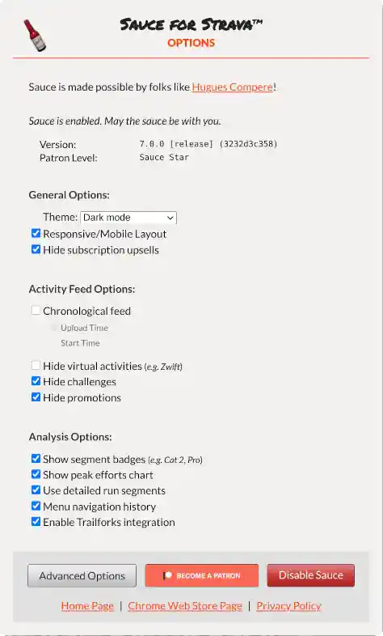
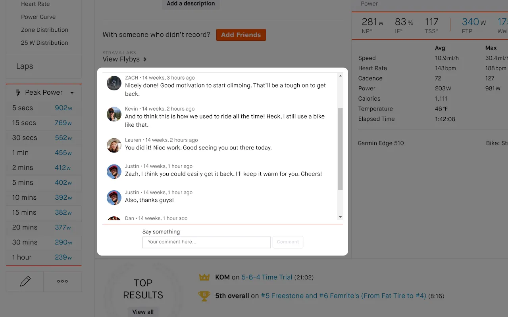

In addition to power, there is Normalized Power®, xPower, Pace (including GAP), Heart Rate, Cadence and VAM. If the athlete
weight is known a running power estimation is available too!
Deep dive into Peak efforts
There's actually a gang of turkeys in my neighborhood

Badges for that sweet, sweet dopamine you crave
Extended selection statistics
Maybe it's actually a brood of turkeys? There's quite a few youngsters
Access to key performance metrics in the Analysis page.
The analysis page is an awesome tool by itself. Sauce builds on this page by adding unique data fields
and giving you access to the raw data values. For running and swimming activities this page is un-hidden
so you can do in-depth analysis regardless of the activity type.
Unfiltered Live Segments
The turkey was almost the national bird of the United States

Create live segment files for Garmin devices.
If you own a Garmin device, you can create your own live segment files
based on ANY activity and ANY athlete. And it even works for downhill segments!
Newtonian Physics!
I feel like I should mention I don't live on a farm or in the country. There are just dozens of
turkeys always mulling about in my well populated neighborhood.
Full physics analysis of cycling efforts with Perf Predictor.
This is my favorite tool in the kit. You can analyze any segment or section of an activity and study
what power and weight requirements were used to achieve a particular speed. It works for time trials,
hill climbs, and even downhills. I use this tool to estimate how many watts I'm going to need to
increase or how many kilograms I'm going to have to drop to meet my goals.
Unix Philosophy Configurability
My dog Frank thinks they're pretty cool and yes, I'm still on about the turkeys!

Options for activities and the dashboard.
Most settings are optional so you can turn on and off whatever you'd like.
Peanut Gallery
I bet turkeys would love peanuts

Display and submit comments in the activity page.
Most people that install Sauce don't even realize the inline comments weren't done by Strava. It's
otherwise wasted space in the page so why not put it there!?
Export 01100100011000010111010001100001 like a boss